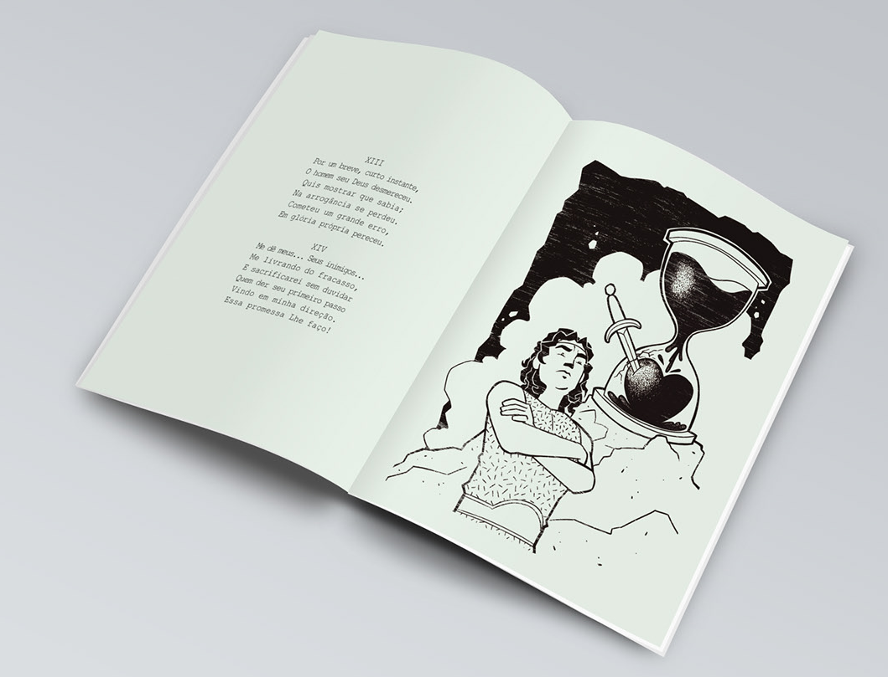

XIII
Por um breve, curto instante, O homem seu Deus desmereceu. Quis mostrar que sabia; na arrogâcia se perdeu. Cometeu um grande erro, Em glória própria pereceu.
XIV
Me dê meus... Seus inimigos... Me livrando dos fracasso, e sacrificarei sem duvidar quem der seru primeiro passo Vindo em minha direção. Essa promessa leh faço!